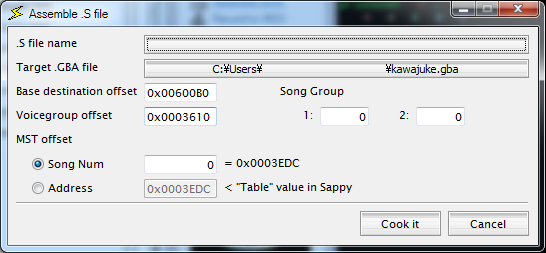
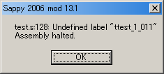

Assemble Song の拡張について

Assemble Song 画面はオリジナルとは表示内容が増えています。
オリジナルソースの時点ですでに手が加えられていましたので、そのまま使用し、さらに拡張しています。
Mod 15 より .s ファイルと ROM イメージファイル部分を「テキストボックス＋参照ボタン」から
「参照ボタン兼ファイル名表示欄」に変更しています。
- .S file name
- 書き込みたい曲の .S ファイルを指定します。
- Target .GBA file
- 書き込み先の ROM ファイルを指定します。デフォルトで Sappy で開いているファイル名が自動的に入ります。
- Base destination offset
- 曲データの書き込み先頭アドレスを指定します。デフォルトで Sappy で開いている曲の先頭アドレスが自動的に入ります。
- Voicegroup offset
- 使用するボイスグループのアドレスを指定します。デフォルトで Sappy で開いている曲のボイスグループアドレスが自動的に入ります。
- MST offset
- 書き込みたい曲の曲テーブルアドレスを指定します。
Sappy でファイルを開いた状態であれば、デフォルトで現在の song num （曲番号）が入ります。この場合、その入力欄の右に実際に書き込まれるオフセット値が表示されます。
そうでない場合には書き込むアドレスを直接指定します。
- Song Group
- 書き込みたい曲の曲グループを指定します。 "1:" と "2:" にそれぞれグループ番号を指定します。通常はどちらも同じ値です。デフォルトで Sappy で開いている曲の曲グループが自動的に入ります。
※ 曲グループとは、 GBA の演奏機能に実装されている、レイヤー表現のようなものです。例えばポケ○ンシリーズであれば 0 番が BGM 用、 1 番が効果音用というように用途ごとに番号を割り振っています。同じグループの曲データは同時には鳴らせない仕組みになっていますが、グループを正しく指定することで、 BGM に割り込む形で効果音を鳴らすようにしています。
なお、 ROM 上にはグループ番号が2つ入力できますが、 2: 側の用途は不明です。用途がわかっている場合を除き 1: と同じにしておいてください。
Mod 16 より、アセンブラを全面的に刷新しました。
そのために逆に今までエラーが出ていなかったものが、エラーとなる可能性があります。
特に .equ シンボル定義やラベル名に使用できる文字が制限されていますのでご注意ください。
シンボル(変数)・ラベル名に使用出来る文字
A〜Z,a〜z (大文字小文字は区別されます)
_ . (半角記号はこの 2 種のみ使用可能です)
0〜9 (ただし、２文字目以降)
全角文字 (基本すべて使用可能です。)
アセンブル時にエラーがあった場合、以下のようなダイアログが表示されます。

エラーメッセージは以下の通りです。
- .sファイル名:行番号: Can't find file ファイル名 for inclusion.
- .include に指定されたファイルが見つかりません。
.s ファイル内で読み込ませるファイル名を確認してください
- .sファイル名:行番号: Undefined label "ラベル名"
- .word 命令で指定されたラベル名が見つかりません。
ラベル名が正しいか確認してください。
- .sファイル名:行番号: unsupported op-code "命令"
- 指定された命令は、Sappy アセンブラでは実装されていません。
正しい命令を書いているか確認してください。
- Error #エラー番号, "エラーメッセージ"
（ On line: "行番号:行内容". ）
- 上記以外のエラーです。状態によって2行目も表示されます。
エラーメッセージを確認して、対応してください。
なお、エラーが発生した場合でも、その部分までのデータは ROM イメージに書き込まれています。
必ずファイルのバックアップをしてから書き込みを行ってください。